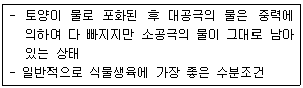
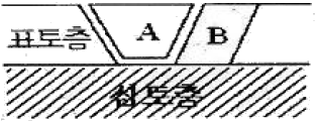
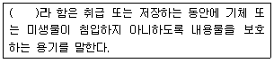
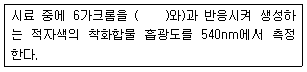
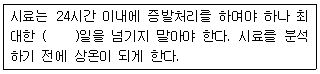
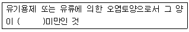
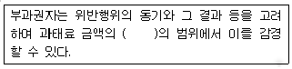

토양환경기사 (2010-09-05 기출문제)
1과목: 토양학개론
1. 토양오염물질 중 DNAPL(dense nonaqueous phase liquid)이 아닌 것은?
- 1, 1, 1-TCA
- TCE
- 클로로페놀
- 톨루엔
(정답률: 67%)

2. Langmuir 등온 흡착모델의 기본 가정으로 옳지 않은 것은?
- 유한개의 흡착지점은 개개의 오염물질에 대해 동일한 친화력을 가진다.
- 고농도에서 등온선은 선형을 유지한다.
- 각 흡착지점은 단 한 개의 분자만 수용된다.
- 주변흡착 지점들 사이에 상호작용이 일어나지 않는다.
(정답률: 59%)
3. 토양수분은 식물학적 견지에서 볼 때 과잉, 유효, 무효 수분으로 나눌 수 있다. 다음 중 과잉수분에 관한 설명으로 옳지 않은 것은?
- 토양 내 염류를 용탈시킨다.
- 토양의 통기를 막는다.
- 토양 내 질소고정 및 암모니아화를 일으키는 호기성 세균의 활성을 저해한다.
- 토양의 포장용수량정력과 위조계수장력 사이의 보유수분이다.
(정답률: 40%)
4. 원통 칼럼에 수리전도도가 0.2m/hr 인 토양을 충진하여 수평으로 놓고 토양 내 기포가 생기지 않게 일정한 유량의 물을 흘려보내주었다. 유량과 단면적의 비 값은 0.⑤ m/h이었고 칼럼전체의 수두차(head loss)는 0.25m이었다. 실험에 사용한 원통 칼럼의 길이는?
- 0.1m
- 0.5m
- 1m
- 2m
(정답률: 50%)
5. 단위체적의 대수층 내에서 저유된 지하수와 대수층으로부터 외부로 뽑아낼 수 있는 지하수량과의 비를 나타내는 용어는?
- 비양수율(specific reuse)
- 간극률(porosity)
- 비산출률(specific yield)
- 비보유율(specific retention)
(정답률: 79%)
6. 토양의 수직단면의 성층구조 중 B층에 관한 설명과 가장 거리가 먼 것은?
- 일반적으로 A층에 비하여 토층의 색이 밝다.
- 토괴의 표면에 점토피막이 형성되어 있기 때문에 구조의 발달을 볼 수 있다.
- 유기물층 바로 밑의 층으로 광물질이 풍부하다.
- 상부 토층으로부터 용탈된 철과 알루미늄 산화물, 고운 점토 등이 집적된다.
(정답률: 100%)
7. 토양공기에 관한 설명으로 옳지 않은 것은?
- 대기에 비하여 탄산가스의 함량(%)이 낮다.
- 대기에 비하여 상대습도(%)가 높다.
- 대기에 비하여 산소의 조성(%)이 낮다.
- 토양공기의 산소함량은 토심이 증가할수록 감소한다.
(정답률: 86%)
8. 어떤 지역에 내리는 연간 강수량이 1500mm이고 그 중 18%가 지하로 항양된다, 또한 이 지역의 비산출률이 0.2일 때 지하로 항양된 강수가 자유면 대수층으로 침투하면 지하수위는 얼마나 상승 되겠는가?
- 약 0.9m
- 약 1.1m
- 약 1.4m
- 약 1.8m
(정답률: 39%)
9. 토양의 침식과 관련된 설명으로 옳지 않은 것은?
- 자연작용에 의한 지질침식, 인공적인 원인에 의한 가속 침식으로 구분됨
- 토양입자에 흡착된 각종 화학물질이 수계로 방출되어 수질오염의 원인이 됨
- 빗물이 지표면을 고르게 면상으로 얇게 씻겨 내리는 경우를 세류침식이라 함
- 토양 침식은 물에 의한 수식, 바람에 의한 풍식으로 구분되며 사막화의 원인이 될 수 있음
(정답률: 74%)
10. 충적대수층의 공극률이 0.29이고 비산출률이 0.24일 때 비보유율(specific retention)은?
- 0.2
- 0.25
- 0.1
- 0.⑤
(정답률: 89%)
11. 토양분류체계에서 옥(order)은 가장 고차원 분류단위이다. 이 중 강우에 의한 세탈이 극심하여 염기 함량이 매우 적은 토양은?
- Entisol
- Ultisol
- Vertisol
- Andisol
(정답률: 58%)
12. 다음 내용이 설명하는 용어로 가장 옳은 것은?

- 위조정
- 흡습계수
- 포장용수량
- 수분담량
(정답률: 88%)
13. Laterite화 작용이 일어날 수 있는 최적의 조건은?
- 고온 건조
- 고온 다우
- 한냉 건조
- 한냉 습윤
(정답률: 60%)
14. 어떤 토양의 양이온 농도가 다음과 같을 때 이 토양의 나트륨 흡착비(SAR)는? (단, Ca2+ : 4meqㆍL-1, Mg2+ : 4meqㆍL-1, Na+ : 12meqㆍL-1)
- 2
- 4
- 6
- 8
(정답률: 74%)
15. 토양에 흔한 다음 이온들의 교환효율의 크기를 순서대로 바르게 나열한 것은?
- Mg2+＞Ca2+＞Na+＞K+
- Mg2+＞Ca2+＞K+＞Na+
- Ca2+＞Mg2+＞Na+＞K+
- Ca2+＞Mg2+＞K+＞Na+
(정답률: 70%)
16. 토양 내 방선균에 관한 설명으로 옳지 않은 것은?
- 형태는 사상균과 비슷하지만 세포내 구조는 세균과 비슷하다.
- 산성 환경에서 생육이 활발하여 산성 토양에서 중요한 분해 작용을 담당하고 있다.
- 흙냄새는 방선균인 Actinomyces oderifer가 분비하는 geosmins과 같은 물질에 의한 것이다.
- 대부분 산소를 요구하는 호기성(好氣性)균으로 과습한 곳에서는 잘 자라지 않는다.
(정답률: 62%)
17. 토양 및 지하수내 질산염과 질소에 관한 내용으로 옳지 않은 것은?
- 질산염 농도가 높은 물은 영유아에게 청색증(blue baby syndrome)을 유발 할 수 있다.
- 질산염은 탄산염과 같이 물을 끓여 제거할 수 있다.
- 토양 및 지하수계 내에서 질소 원소는 미생물에 의해 산화, 환원반응을 한다.
- 지하수환경 내에서 NO2의 함량은 소량이다.
(정답률: 65%)
18. 물속에 녹아있는 이온성, 분자성 화학종이 높은 농도영역에서 낮은 농도영역으로 이동하는 현상을 무엇이라 하는가?
- 이송
- 확산
- 분산
- 유동
(정답률: 71%)
19. 2:1형 점토 광물로 수분함량에 따라 팽창-수축이 심하게 일어나며 양이온교환능력과 비표면적이 큰 광물은?
- 몽모리오나이트(montmorillonite)
- 카롤리나이트(kaolinite)
- 할로이사이트(halloysite)
- 클로라이트(chlorite)
(정답률: 78%)
20. 가수분해(1차 반응)에 영향을 미치는 요인에 관한 설명으로 옳지 않은 것은?
- 점토의 함량이 많아지면 가수분해는 감소한다.
- 온도가 상승하면 가수 분해율도 증가한다.
- pH가 감소하면 산성-촉매 가수분해반응은 증가한다.
- 고농도의 금속이온은 화학물질의 가수분해를 촉진시킨다.
(정답률: 54%)
2과목: 토양 및 지하수 오염조사기술
21. 농도표시 중 수산화나트륨(NaOH)의 25%의 용액 100mL 중 NaOH 무게는?
- 25mg
- 250mg
- 2500mg
- 25000mg
(정답률: 0%)
22. 토양 중 불소의 자외선/가시선 분광법 분석에 대한 내용으로 옳지 않은 것은?
- 불소가 진홍색의 자르코니움-발색시약과의 반응으로 무색의 ZrF62-를 형성한다.
- 불소이온과 지르코니움 이온 사이의 반응 속도는 반응혼합물의 산도에 따라 달라진다.
- 시료에 잔류염소가 함유되어 있는 경우 잔류염소 1.0mg당 아비산나트윰용액 1mL를 가하여 제거한다.
- 이 시험방법에 따라 시험할 경우 토양 중 정량한계는 10mg/kg이다.
(정답률: 67%)
23. TPH(석유계 총탄화수소)의 분석(기체크로마토그래피법)에 관한 내용으로 옳지 않은 것은?
- 토양 중에 비등점이 높은(150℃~500℃) 유류에 속하는 제트유, 등유, 경유, 벙커C유, 윤활유, 원유 등의 측정에 사용
- 디클로로메탄으로 추출하여 정제
- 정량한계는 석유계총탄화수소로 10mg/kg
- 검출기는 전자포착형검출기(ECD)를 주로 사용
(정답률: 34%)
24. 저장물질이 없는 누출검사대상시설-가압시험법에 사용되는 검사기기 및 기구에 관한 기준으로 옳지 않은 것은?
- 압력계(압력자기기록계) : 최소눈금이 시험압력의 5%이내이고 이를 읽고 측정압력의 기록이 가능한 압력계이어야 한다.
- 온도계 : 시험압력에 충분히 견딜 수 있는 것으로서 최소눈금 1℃ 이하를 읽고 기록이 가능한 온도계이어야 한다.
- 안전밸브 : 2.0kgf/cm2 이상에서 작동되어야 한다.
- 가압장치 : 불활성가스 용기 및 압력조정장치를 말한다.
(정답률: 72%)
25. 다음 중 ‘상온’을 나타내는 온도의 범위는?
- 1~35℃
- 10~25℃
- 15~25℃
- 15~35℃
(정답률: 67%)
26. 토양시료채취가 없을 때 모종삽 또는 삽 등과 같은 기구를 사용하여 표토층 시료를 채취할 경우 다음 그림의 어느 부분에서 채취하는 것이 가장 적당한가? (단, 일반지역 기준)

- A부분의 흙을 채취한다.
- A와 B부분의 흙을 1:1로 혼합하여 채취한다.
- A와 B부분의 흙을 1:2로 혼합하여 채취한다.
- A부분을 제거한 다음 B부분의 흙을 채취한다.
(정답률: 82%)
27. ( )안에 옳은 내용은?

- 밀폐용기
- 기밀용기
- 밀봉용기
- 차단용기
(정답률: 34%)
28. 다음은 6가 크롬(자외선/가시선 분광법) 분석에 관한 설명이다 ( )안에 옳은 내용은?

- 아연분말
- 디페닐카바지드
- 피리딘-피라졸론
- 염화제일주석
(정답률: 72%)
29. 기체크로마토그래피법에 의한 페놀류 분석에 관한 설명으로 옳지 않은 것은?
- 토양 중 페놀 및 펜타클로로페놀을 아세톤/노말헥산(1:1)으로 추출한다.
- 불꽃이온화검출기(F10)에 검출되는 정향한계는 페놀이 0.02mg/kg이다.
- 디클로로메탄과 같이 머무름 시간이 비교적 긴 호합물은 용매의 피크와 겹쳐 분석을 방해한다.
- 농축장치로 구데르나다니쉬 농축기 또는 회전증발농축기를 사용한다.
(정답률: 50%)
30. 저장물질이 없는 누출검사대상시설-가압시험법에서 ‘안정된 시험압력’ 이라함은 가압 후 유지시간동안 압력강하가 시험압력의 몇 % 이하인 압력을 말하는가?
- 10%
- 15%
- 20%
- 25%
(정답률: 75%)
31. 0.⑤ N의 KMnO4 용액 2000mℓ를 조제하고자 한다. 몇 g의 KMnO4가 필요한가? (단, KMnO4의 분자량 = 158)
- 0.79g
- 1.58g
- 3.16g
- 6.32g
(정답률: 43%)
32. 토양시료의 수분측정결과 다음과 같은 자료를 얻었다. 수분함량은? (단, 증발접시의 무게(W1) : 30.257g, 증발접시오 시료의 무게(W2) : 52.495g, 건조후 증발접시와 시료의 무게(W3) : 45.521g)
- 37.8%
- 36.6%
- 34.2%
- 31.4%
(정답률: 63%)
33. 토양시료용기에는 채취날짜. 위치, 시료면, 토양깊이, 재취자 등 시료내역을 기재한다. 석유계총탄화수소 시험용 시료의 시료용기에 기재 내용으로 옳은 것은?
- 저장시설에 보관된 유류의 종류 및 제조회사명
- 저장시설에 보관된 유류의 종류 및 저장량
- 저장시설에 보관된 유류의 종류 및 저장기간
- 저장시설에 보관된 유류의 종류 및 시설 설치시기
(정답률: 59%)
34. 토양환경평가 방법 및 절차 기준으로 옳은 것은?
- 1단계(기초조사)와 2단계(정밀조사)로 구분하여 실시한다.
- 1단계(개황조사)와 2단계(정밀조사)로 구분하여 실시한다.
- 1단계(기초조사), 2단계(개황조사), 3단계(정밀조사)로 구분하여 실시한다.
- 1단계(개황조사), 2단계(정밀조사), 3단계(평가)로 구분하여 실시한다.
(정답률: 27%)
35. 다음의 토양오염 위해도 평가 수행 절차 중 가장 먼저 이루어지는 것은?
- 정화목표치 계산방법(노출경로별)
- 위해성 판단방법
- 위해도 결정
- 노출경로별 인체노출량 산정
(정답률: 50%)
36. 다음 용어에 대한 설명으로 옳지 않은 것은?
- 가스체의 농도는 표준상태(0℃, 1기압, 상대습도 0%)로 환산 표시한다.
- 방울수라 함은 20℃에서 정제수 20방울을 적하할 때, 그 부피가 약 1mL가 되는 것을 뜻한다.
- 진공(감압)이라 함은 따로 규정이 없는 한 15mmH2O 이하를 말한다.
- ‘약’ 이라 함은 기재된 양에 대하여 ±10% 이상의 차가 있어서는 안된다.
(정답률: 67%)
37. 저장물질이 있는 누출검사대상시설-액상부의 시험법에서 누출측정에 주의 내용으로 옳지 않은 것은?
- 기상변화가 심할 때에는 측정하지 않는다.
- 가능한 짧은 시간 동안 검사를 하고 짧은 검사가 어려우면 한 번의 긴 검사를 수행한다.
- 측정 중 진동 등에 의해 누출량 측정에 영향을 주는 경우가 없도록 한다.
- 최소한 하루 전에 탱크를 채우고 검사하기 직전에 탱크를 채우지 않아야 하며 온도와 탱크변형이 안정화 될 수 있는 충분한 여유시간을 둔다.
(정답률: 75%)
38. 이온 전극법에 의한 토양 중 시안 측정에 관한 설명 중 옳지 않은 것은?
- 토양을 pH 12~13의 알칼리성으로 조절 후 시안 이온전극과 비교전극을 사용하여 전위를 측정한다.
- 이 시험방법으로 토양 중 시안의 정량한계는 5.0 mg/kg이다.
- 황화합물이 함유된 시료는 아세트아연 용액(10%) 2mL를 넣어 제거한다.
- 잔류염소가 함유된 시료는 잔류염소 20mg당 L-아스코르빈산(10%) 0.6mL를 넣어 제거한다.
(정답률: 53%)
39. 다음 설명 중 일반지역(농경지)의 토양 시료 채취 방법 중 시료채취지점 선정에 관한 내용으로 옳은 것은?
- 대상 지역 내에서 나선 형으로 5~10개 지점 선정
- 대상 지역 내에서 지그재그형으로 5~10개 지점 선정
- 대상지역에서 대표치를 구할 수 있는 1개 지점
- 대상 지역의 중심 지점과 주변 4방위 총 5개 지점
(정답률: 69%)
40. 다음은 토양 내 수분 함량 측정을 위한 시료 관리에 관한 내용이다. ( )안에 내용으로 옳은 것은?

- 2일
- 3일
- 5일
- 7일
(정답률: 77%)
3과목: 토양 및 지하수 오염정화 기술
41. 지하저장창고로부터 디젤이 유출되어 토양이 오염되었다. 오염부지평가결과 오염누출지역의 토양밀도가 1.8g/cm3, 오염농도가 4000mg/kg, 오염범위가 5m×25m×3m이라면 오염된 토양 내 디젤의 양은?
- 2700kg
- 3400kg
- 4500kg
- 5600kg
(정답률: 65%)
42. 유기화합물로 오염된 토양을 바이오필터로 처리하고자 한다. 바이오필터의 운전 시 문제점과 가장 거리가 먼 것은?
- 배기가스 처리
- pH 저하
- 충전층의 막힘현상
- 수분증발
(정답률: 67%)
43. 동전기정화기법에서는 토양 내에 전기를 가하게 되면 동전기의 현상에 의하여 토양내의 오염수, 오염물질, 오염입자가 이동하게 되는데 이때 발생되는 현상과 가장 거리가 먼 것은?
- 전기삼투
- 전기이동
- 전기전동
- 전기영동
(정답률: 50%)
44. 독립영양미생물(화학합성 자가영양ㅇ)의 탄소원과 에너지원을 알맞게 짝지은 것은?
- CO2-무기물의 산화환원반응
- CO2-유기물의 산화환원반응
- 유기탄소-무기물의 산화환원반응
- 유기탄소-유기물의 산화환원반응
(정답률: 60%)
45. 오염토양에 대한 고형화 및 안정화(S/S)에 대한 설명으로 옳지 않은 것은?
- 폐기물의 취급이 용이해지는 장점이 있다.
- 오염물이 용출되어 나올 수 있는 폐기물의 표면적이 감소하는 장점이 있다.
- 폐기물의 용해성을 증가시켜 독성 추출을 유도할 수 있다.
- 안정화는 폐기물의 용해성, 유동성 또는 독성형태를 최소화하는 것이다.
(정답률: 65%)
46. 바이오벤팅 기술의 장점으로 옳지 않은 것은?
- 현장 지질 구조 및 오염물 분포에 따른 처리기간의 변동이 적다.
- 유기화합물의 추출 및 생분해가 동시에 가능하다.
- 추출증기에 대한 후처리 공정이 적거나 필요하지 않다.
- 휘발성 물질 이외에 준휘발성 물질도 처리가 되므로 보다 광범위한 종류의 오염물질을 제거할 수 있다.
(정답률: 34%)
47. 처리된 폐기물의 위해성 평가를 위한 용출능 평가실험 중 주기적으로 용출액의 pH를 특정 최대산첨가량까지 맞춰준다는 점을 제외하고는 TCLP법과 유사한 것은?
- MWEP 실험실
- MEP 실험법
- EP TOX 실험법
- CLT 실험법
(정답률: 54%)
48. 수직방벽을 이용한 오염지하수 제어방법 중 슬러리월의 장, 단점으로 옳지 않은 것은?
- 유해성이 큰 침출수에 노출될 경우 벤토나이트 특성 저하
- 침출수 저항이 강한 벤토나이트 사용이 가능
- 지하수위 강하에 따른 주변지역의 영향이 적음
- 유지관리비가 많이 소요됨
(정답률: 69%)
49. 오염지역의 차단기술 중 그라우팅(grouting)에 관한 설명으로 옳지 않은 것은?
- 액상물질을 지반이나 암반 내에 주입 고화시키는 방법이다.
- 지반의 강도를 증진시키고 지하수 흐름을 감소시킨다.
- 일반적으로 슬러지윌보다 비용이 저렴하고 벽체의 투수성이 작아 오염지역 차단에 많이 사용된다.
- 오염지역의 양반간극이나 절리로 오염물질이 흐르는 것을 차단하는데 유효하게 사용할 수 있다.
(정답률: 36%)
50. 지중 내에 직류전기를 공급하여 지반으로부터 오염물질을 추출하는 기술의 장, 단점으로 옳지 않은 것은?
- 지반 메트릭스 자체에 미치는 영향이 정확하게 규명되지 않음
- 금속으로 오염된 지역에 효과적임
- 염이나 2차 광물의 침전에 의하여 효율이 저하됨
- 집수정으로부터 오염된 지중용액의 추출이 어려움
(정답률: 54%)
51. 페놀로 오염된 지하수를 과산화수소(H2O2)와 철촉매(Fe2+)를 사용하여 처리하고자 한다. 예비실험결과 99% 제거시 각각 과산화수소와 철의 필요량이 2.5(g H2O2/g phenol), 0.⑤(mg Fe2+/mg H2O2)임을 알았다. 오염현장의 페놀의 오염농도가 6000 mg/L 이고 추출된 지하수의 유량이 30000 L/day일 때 필요한 철촉매(Fe2+)의 양은? (단, 비중 1.0 페놀 제거율 99% 기준임)
- 약 16 kg/day
- 약 23 kg/day
- 약 32 kg/day
- 약 41 kg/day
(정답률: 32%)
52. 1, 1, 1-TCE는 지중에서 분해되며, 반감기가 180일이다. 이 오염물질의 분해 반응속도가 1차 반응이라고 가정할 때, 조기오염농도의 90%가 제거되는데 소요되는 기간은?
- 약 273 day
- 약 313 day
- 약 423 day
- 약 598 day
(정답률: 42%)
53. 전기 동력학적 오염토양 복원기술이 타 기술과 비교하여 갖는 장점이 아닌 것은?
- 최적의 pH 조절이 용이
- 다양한 종류의 오염물질에 적용 가능
- 이질 토양에서도 균일한 오염물질의 제거가 가능
- 토양의 포화도에 무관
(정답률: 29%)
54. 산소 또는 무산소 조건에서 대체로 500℃ 이하의 토양온도 조건에서 오염물질을 토양으로부터 제거하는 기술인 열탈착기술에 관한 설명으로 옳지 않은 것은?
- 토양으로부터 검출한계 이하까지 유기염소 및 유기인살충제의 제거가 가능하다.
- 다양한 수분 함량과 오염농도를 가진 여러 종류의 토양에 적용이 가능하다.
- 토양으로부터 검출한계 이하로 휘발성 유기화합물의 제거가 가능하다.
- 처리하는 동안에 다이옥신과 푸란이 생성되는 단점이 있다.
(정답률: 77%)
55. 바이오벤팅 적용을 위해 산소소모율을 구하고자 한다. 주입공기의 유량 1440 m3/day, 초기산소농도 20.9%, 배기가스의 산소농도 3%, 토양체적이 2500m3, 토양의 공극율이 0.3 이면 산소소모율은?
- 34.4% O2/day
- 46.4% O2/day
- 52.2% O2/day
- 69.4% O2/day
(정답률: 60%)
56. 어느 지역의 토양내 TCE가 300g 존재하고 있다. 주어진 조건에 따라 계면활성제 세정공정을 이용하여 모두 정화하고자 할 경우, 필요한 계면활성제의 양은? (단, 계면활성제 내 TCE 용해도 2000mg/L, 계면활성제의 밀도 1.2kg/L)
- 160kg
- 180kg
- 200kg
- 220kg
(정답률: 65%)
57. 토양이나 지하수를 정화하는 기술인 식물정화법 중 식물에 의한 추출을 효과적으로 이룰 수 있는 대표 식물종과 가장 거리가 먼 것은? (단, 중금속 기준)
- 인도겨자
- 해바라기
- 포플로나무
- 보리
(정답률: 72%)
58. 오염지하수의 정화를 위해 지하수 흐름방향의 하류에 설치되는 투수성반응벽체의 경우 오염물질과 반응하여 오염물질을 무해화하거나 흡착하는데 사용되는 반응물질(reactive material)로 사용될 수 없는 것은?
- 영가철(Fe˚)
- 제오라이트
- 활성탄
- 영가납(Pb˚)
(정답률: 70%)
59. Soil Flushing 에 관한 설명으로 옳지 않은 것은?
- 물 또는 오염물질 용해도를 증가시키기 위해 첨가제가 함유된 물을 토양 공극 내에 주입한다.
- 처리과정에서 계면활성제를 첨가하여 용해도를 증가시킬 수 있다.
- 휘발성 유기화합물질을 제거할 때 경제성이 뛰어나다.
- 투수성이 낮은 토양에서는 처리하기가 어렵다.
(정답률: 39%)
60. 차단시설인 시이트파일의 장, 단점과 가장 거리가 먼 내용은?
- 지반굴착이 필요함
- 내구년수 연장하고 부식방지를 위하여 코팅 가능
- 강재의 화학적 침해 가능
- 팽창지수재 사용시 불투수 가능
(정답률: 48%)
4과목: 토양 및 지하수 환경관계법규
61. 토양환경보전법 규정에 의한 조사대상지역의 토양정밀조사의 방법을 선정할 때의 고려사항으로 가장 거리가 먼 것은?
- 토양의 생태계 영향
- 토양의 이용현황
- 토양의 종류별 분류
- 오염물질의 특성
(정답률: 25%)
62. 대책계획의 주민건강피해조사 및 대책의 내용에 포함될 사항과 가장 거리가 먼 것은?
- 건강피해의 판정 및 대책
- 건강피해지역 통제계획
- 건강피해조사의 대상 및 방법
- 건강피해조사 기관
(정답률: 59%)
63. 지하수를 공업용수로 이용하는 경우에 특정유해물질의 수질 기준으로 옳지 않은 것은?
- 카드뮴 0.02 mg/L 이하
- 비소 0.1 mg/L 이하
- 시안 0.01 mg/K이하
- 수은 0.001 mg/K이하
(정답률: 65%)
64. 토양오염검사수수료가 가장 비싼 항목은?
- 유기인
- 비소
- 불소
- 6가크롬
(정답률: 60%)
65. 토양관련전문기관의 결격사유에 해당하는 자와 가장 거리가 먼 것은?
- 한정치산자
- 파산선고를 받고 복원 된지 2년이 경과하지 않은 자
- 속임수 그 밖에 부정한 방법으로 토양관련전문기관의 지정을 받았다가 취소된 후 2년이 지나지 아니한 자
- 토양환경보전법을 위반하여 징역 이상의 실형의 선고를 받고 그 집행이 종료되거나 집행이 면제된 날부터 2년이 경과되지 아니한 자
(정답률: 57%)
66. 다음 중 수질검사대상 지하수의 기준으로 옳은 것은?
- 생활용수로서 1일 양수능력이 10톤 이상인 경우
- 공업용수로서 1일 양수능력이 20톤 이상인 경우
- 어업용수로서 1일 양수능력이 50톤 이상인 경우
- 농업용수로서 1일 양수능력이 100톤 이상인 경우
(정답률: 57%)
67. 특정토양오염관리대상시설의 변경신고 사유와 가장 거리가 먼 것은?
- 대표자가 변경되는 경우
- 특정토양오염관리대상시설의 저장방법을 변경하는 경우
- 특정토양오염관리대상시설의 사용을 종료하거나 폐쇄하는 경우
- 특정토양오염관리대상시설에 저장하는 오염물질을 변경 하는 경우
(정답률: 50%)
68. 토양보전기본계획에 포함되어야 할 사항과 가장 거리가 먼 것은?
- 토양보전에 관한 시책방향
- 토양오염의 방지에 관한 사항
- 오염토양의 정화 및 복원에 관한 사항
- 토양오염 현황 및 측정에 관한 사항
(정답률: 44%)
69. 토양오염우려기준으로 옳지 않는 것은? (단, 지적법에 따른 지목이 임야(2지역)인 경우이며, 단위는 mg/kg임)
- 카드뮴 : 10
- 구리 : 150
- 아연 : 600
- 비소 : 50
(정답률: 32%)
70. 다음은 토양정화업의 등록을 한 자에게 위탁하지 아니하고 오염원인자가 직접 정화할 수 있는 경우에 관한 내용이다. ( )안에 내용으로 옳은 것은?

- 5세제곱미터
- 10세제곱미터
- 30세제곱미터
- 50세제곱미터
(정답률: 67%)
71. 토양정화업의 등록요건 중 반입정화시설에 대한 기준으로 옳은 것은?
- 정화시설 200제곱미터 이상, 보관시설 200제곱미터 이상
- 정화시설 400제곱미터 이상, 보관시설 400제곱미터 이상
- 정화시설 200제곱미터 이상, 보관시설 400제곱미터 이상
- 정화시설 400제곱미터 이상, 보관시설 200제곱미터 이상
(정답률: 71%)
72. 대책계획인 오염토양개선사업과 가장 거리가 먼 것은?
- 객토 및 토양개량제의 사용 등 농토배양사업
- 오염된 수로의 준설사업
- 오염토양의 외부차단사업
- 오염물질의 흡수력이 강한 식물식재사업
(정답률: 65%)
73. 지하수법에서 사용되는 용어에 대한 설명으로 옳지 않은 것은?
- 지하수개발ㆍ이용시공업 : 지하수개발ㆍ이용을 위한 시설을 시공하는 사업을 말한다.
- 지하수영향조사 : 지하수의 개발ㆍ이용이 주변지역에 미치는 영향을 분석 : 예측하는 조사를 말한다.
- 지하수 정화업 : 지하수에 함유된 오염물질을 제거ㆍ분해 또는 희석할수 있는 환경부령으로 절하는 시설을 이용하는 사업을 말한다
- 원상복구 : 원상복구 대상인 시설 또는 토지에 대하여 오염물질의 유입을 막고 사람의 보건 및 안전에 위험을 주지 아니하도록 해당시설을 해체하거나 해당 토지를 적절하게 되메우는 것을 말한다.
(정답률: 36%)
74. 시ㆍ도지사가 오염원인자에게 토양오염방지를 위한 조치를 명령을 할 때는 토양오염물질 및 시설의 종류ㆍ규모 등을 감안하여 얼마 기간의 범위 안에서 그 이행기간을 정하여야 하는가? (단, 연장기간은 고려하지 않음)
- 6월
- 1년
- 2년
- 3년
(정답률: 39%)
75. 지하수에 관한 조사업무를 대행하는 지하수조사 전문기관이 작성하는 지하수조사계획서에 포함되는 사항과 가장 거리가 먼 것은?
- 원상복구계획
- 시추계획
- 조사내용
- 조사지역
(정답률: 54%)
76. 토양관련전문기관 또는 토양정화업의 기술 인력의 보수교육 기준으로 옳은 것은?
- 신규교육을 받은 날을 기준으로 3년마다 5시간
- 신규교육을 받은 날을 기준으로 3년마다 8시간
- 신규교육을 받은 날을 기준으로 5년마다 5시간
- 신규교육을 받은 날을 기준으로 3년마다 8시간
(정답률: 56%)
77. 다음은 과태료 부과기준에서 일반기준 중에 한 가지를 서술한 것이다. ( )안에 들어갈 내용으로 옳은 것은?

- 2분의 1
- 3분의 1
- 4분의 1
- 5분의 1
(정답률: 54%)
78. 토양오염조사기관으로 대통령령이 정하는 기관과 가장 거리가 먼 것은?
- 국립환경과학원
- 유역환경청 또는 지방환경청
- 한국환경공단
- 시ㆍ도 보건환경연구원
(정답률: 63%)
79. 지하수를 생활용수로 이용하는 경우에 있어서 적용되는 수질기준 항목 중에서 일반오염물질이 아닌 항목은?
- 수소이온농도(pH)
- 질산성질소
- 부유물질
- 염소이온
(정답률: 54%)
80. 특정토양오염관리대상시설의 설치자는 대통령령이 정하는 바에 따라 토양오염을 방지하기 위한 시설을 설치하고 관리하여야 한다. 이를 위반하여 토양오염방지시설을 설치하지 아니한 자에 대한 벌칙기준은?
- 1년 이하의 징역 또는 500만원 이하의 벌금
- 2 이하의 징역 또는 1000만원 이하의 벌금
- 3년 이하의 징역 또는 2000만원 이하의 벌금
- 5년 이하의 징역 또는 3000만원 이하의 벌금
(정답률: 36%)